Подключитесь к Wi-Fi сети устройства с любого устройства (компьютера, телефона или планшета)
⚠️ ВАЖНО: Перед началом обновления
Обязательно сохраните лицензионный ключ и номер прибора! При случайном удалении файла с базой данных
(который доступен в режиме администратора) потребуется повторная активация.
Рекомендуется:
- Сделать скриншот раздела с лицензионной информацией
- Записать номер прибора и лицензионный ключ на бумаге
- Сохранить эти данные в надежном месте
Шаг 1: Подключение к устройству
Убедитесь, что устройство включено и подключено к Wi-Fi сети. В коде указано, что устройство создает
точку
доступа с именем "Makita" и паролем "12345678".
Примечание: В коде устройства заданы следующие настройки:
- SSID:
Makita
- Пароль:
12345678
- Режим: Точка доступа (AP)
Подключитесь к Wi-Fi сети устройства с любого устройства (компьютера, телефона или планшета)
Откройте WEB браузер и перейдите по адресу 192.168.4.1 (предварительно отключите сеть "Мобильные данные")
Шаг 2: Открытие меню
Откройте меню нажав на иконку указанную на рисунке ниже.
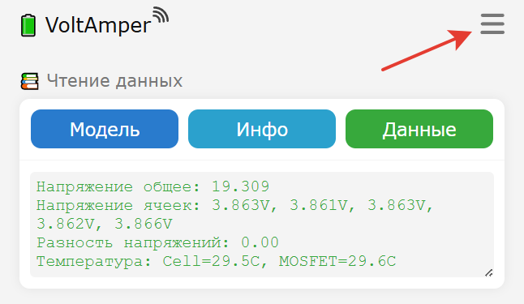
Шаг 3: Ввод пароля администратора.
После открытия меню нажмите иконку ключ указанную на рисунке.
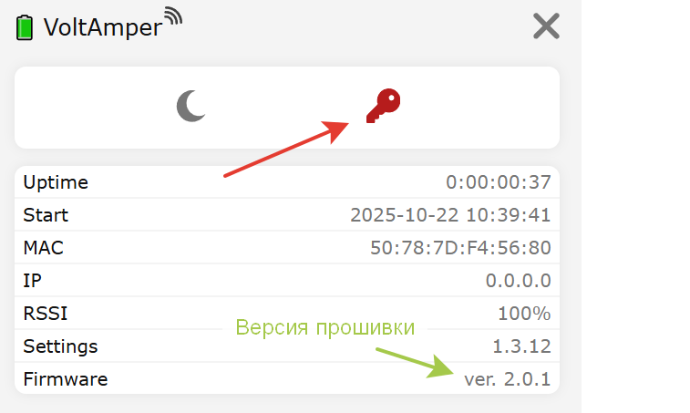
И введите в поле, открывшегося окна Password, пароль LXTFIX (для новых версий) или nik1709 (для старых
версий)
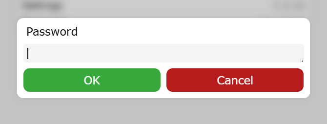
Шаг 4: Выбор прошивки
После ввода правильного пароля иконка ключа станет зеленым и появится иконка ОТА (облако)".
Нажав на иконку OTA откроется проводник файлов вашего устройства. Найдите и выберите заранее скачанную
прошивку.
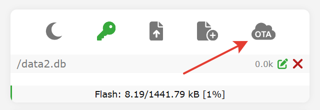
Примечание: Убедитесь, что файл прошивки имеет правильный формат (обычно .bin) и
совместим с вашим устройством.
Шаг 5: Загрузка новой прошивки
После выбора файла прошивки нажмите кнопку ОК для начала загрузки.
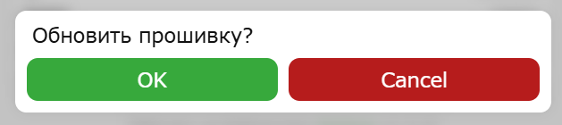
Шаг 6: Процесс обновления
При обновлении прошивки иконка облако станет зеленым. Не прерывайте процесс обновления и не отключайте
питание устройства до появления сообщения "OTA завершено" в нижней части экрана.
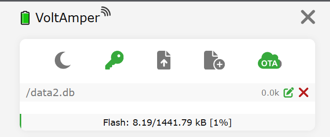
Внимание: Прерывание процесса обновления может привести к повреждению прошивки и
необходимости физического перепрограммирования устройства!
Шаг 7: Завершение обновления
После успешной загрузки прошивки устройство обычно перезагружается автоматически. Если этого не
произошло, вы
можете перезагрузить устройство вручную с помощью кнопки "Перезагрузить" в веб-интерфейсе или выключив и
включив питание.
Шаг 8: Проверка новой версии
После перезагрузки снова откройте меню и проверьте, что версия прошивки изменилась на новую.
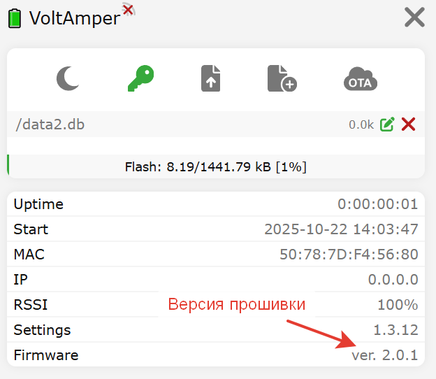
Дополнительная информация
В коде устройства реализована система лицензирования через серийный номер. Если после обновления
возникают
проблемы с лицензией, проверьте правильность введенного ключа в разделе программатора. Обратитесь в
техподдержку.
Важные предупреждения
- Под паролем администратора не совершайте иных действий кроме указанных в данной инструкции.
- Убедитесь, что источник прошивки надежный и файл не поврежден
- Не прерывайте процесс обновления
- Убедитесь, что устройство имеет стабильное питание во время обновления
- После прошивки выйдите из режима администратора введя неверный пароль.
⚠️ ВАЖНО: Перед началом обновления
Обязательно сохраните лицензионный ключ и номер прибора!.
Рекомендуется:
- Сделать скриншот раздела с лицензионной информацией
- Записать номер прибора и лицензионный ключ на бумаге
- Сохранить эти данные в надежном месте
Шаг 1: Подготовка к USB обновлению
Для обновления прошивки через USB понадобится:
- USB кабель (micro-USB или USB-C, в зависимости от модели устройства)
- Скачанная прошивка (.bin файл)
- WEB ресурс для прошивки ESPWebTool
Примечание: Убедитесь, что у вас установлены драйверы для подключения ESP32 к
компьютеру и устройство определяется.
Шаг 2: Подключение к прибору
Подключите USB кабель к диагностическому модулю.

Шаг 3: Запуск режима прошивки
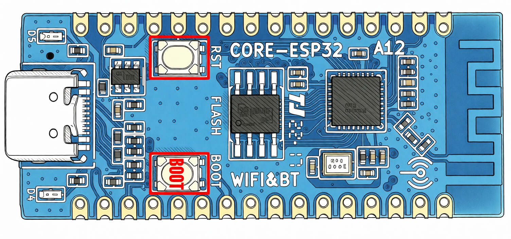
Зажмите кнопку BOOT на плате ESP32 и подайте питание подключив USB кабель к компьютеру, удерживая кнопку.
После включения питания можно отпустить кнопку.
Примечание: Устройство должно появиться в диспетчере устройств как COM порт.
Шаг 4: Настройка и загрузка прошивки
Откройте ESPWebTool и настройте параметры:
- Нажмите иконку CONNECT
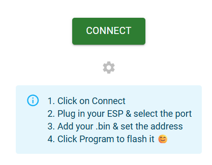
- Из предлагаемого списка com выберите USB JTAG/Serial debug и нажмите Подключение
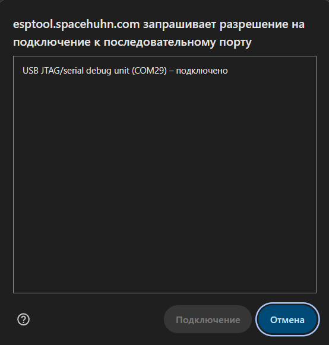
- Также дополнительно скачайте файлы bootloader.bin и partitions.bin,
которые потребуются для прошивки чистого контроллера.
- Нажав иконку SELECT и выберите файл прошивки, который вы скачали ранее
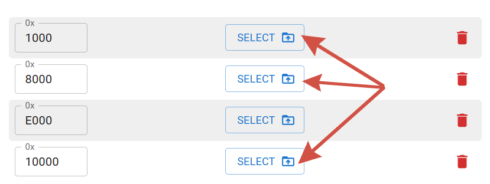
- И установите адреса в соответствии со скриншотом
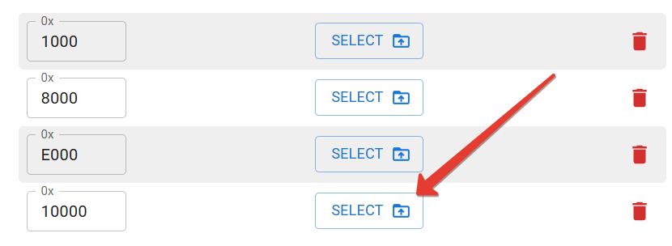
- Нажмите иконку PROGRAM.
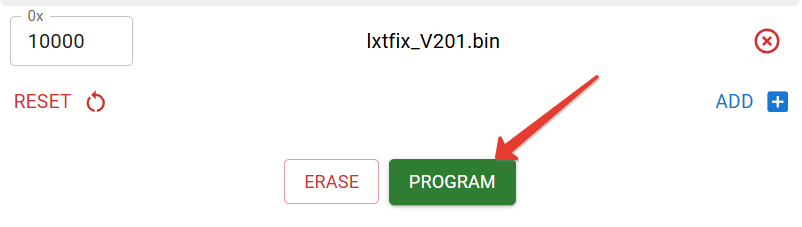
- Дождитесь окончания загруки.
Шаг 5: Перезагрузка устройства
После успешной загрузки прошивки отключите питание устройства и отсоедините USB кабель. Затем снова
подключите питание, чтобы запустить новую прошивку.
Шаг 6: Проверка новой версии
После перезагрузки откройте веб-интерфейс устройства и проверьте, что версия прошивки изменилась на
новую.
Дополнительная информация
Если у вас возникли проблемы с подключением устройства к компьютеру, проверьте наличие и
работоспособность USB драйверов.
В коде устройства реализована система лицензирования через серийный номер. Если после обновления
возникают
проблемы с лицензией, проверьте правильность введенного ключа в разделе программатора. Обратитесь в
техподдержку.
Важные предупреждения
- Убедитесь, что используете правильный файл прошивки для вашей модели устройства
- Не прерывайте процесс прошивки до его завершения
- Убедитесь, что устройство имеет стабильное питание во время обновления
- Проверьте правильность настроек COM порта и скорости соединения